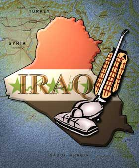

|

That giant sucking sound
Suck, suck suck!
- - - - - - - - - -
by Peter Lee
 HAT GIANT SUCKING SOUND you hear is the the world's terrorists and jihadniks rushing to Iraq in search of employment and exaltation. It is also the sound of the World's Only Superpower desperately laboring to pull its imperial boot out of the Iraq quagmire. HAT GIANT SUCKING SOUND you hear is the the world's terrorists and jihadniks rushing to Iraq in search of employment and exaltation. It is also the sound of the World's Only Superpower desperately laboring to pull its imperial boot out of the Iraq quagmire.
The brutal attacks on the UN Mission and the Jordanian embassy in Baghdad and the systematic destruction of Iraqi infrastructure indicate more than a nihilistic eagerness to destroy soft, accessible targets.
They signal the initiation of total war against the US occupation of Iraq by Muslim extremists from around the world. The extremists are the hammer, and helpless Iraq is the anvil against which they hope to pound America flat.
America will face lengthening odds--and will be facing them alone.
Of course the giant lemonade factory known as the Bushco is trying to put a different spin on things.
Even as the shattered UN presence in Iraq is withdrawn to Jordan and Kofi Annan reminds the US of its obligations as an occupying power to provide security, hawks within the Bush and Blair administration see this as a golden opportunity to shunt responsibility for Iraq off onto the detested, humiliated, and sidelined blue helmets.
Under the theory that this mini-9/11 will galvanize world opinion on behalf of the war on terror, the nations of the world will be asked--or commanded, if our peremptory mini-Mikado runs true to form--to send to Iraq the troops they have been jealously hoarding in anticipation of a UN mandate, in order to protect the pathetic UN and civilization and democracy as we have defined them in Iraq.
Then, with a multilateral figleaf in place, we're off the hook! As long as the guerilla¡¯s motto is "Death to the UN" and Polish and Indian peacekeepers are also dying with predictable regularity, Iraq is no longer America's Fiasco; it's an international fuckup! On to the 2004 elections!
Too bad it probably won't happen.
The truck bombings signal that no foreigners are safe. The only surprise is that this tactic to drive out international organizations and reduce the occupation to a single, detested American presence didn't happen sooner.
The UN and NGOs are going to remember that when America eagerly donned the mantle of occupying authority in Iraq, it took responsibility for guaranteeing the physical security of the country--security it is manifestly incapable of supplying. And if the US can't do it, who can? Denmark?
The UN and NGOs have now learned that distancing themselves from the occupation, while offering them legitimacy in Iraqi eyes, provides no protection against assassination.
But they are not going to throw in their lot with the coalition occupiers.
Just as the greedy and opportunistic contractors have learned to shirk Iraq, the courageous and dedicated people who staff international relief organizations will temper their exposure and engagement in a country that has become as dangerous and lawless as Afghanistan.
Sympathetic foreign governments, driven by popular opinion, will be less eager to commit the lives of their troops and civilians to serve in the maelstrom of violence the United States is presiding over in Iraq.
Arab countries are probably quite happy to see their home-grown extremists preoccupied with chewing up Iraq instead of their respective homelands. The countries Mr. Go-it-Alone gave the back of his hand to in the run-up to the war are going to let us stew in our own juice.
Within Iraq, the hamfisted and incompetent American occupation has already squandered much of its post-conquest goodwill. The destruction of Baghdad's water main and Iraq's main pipeline to the north have sent the message to Iraqis and the CPA that things are going to get worse before they get better.
The prospects for transferring authority and responsibility to a credible Iraqi scapegoat administration are dwindling into insignificance, and America will endure the continued reproaches of the Iraqis it has liberated, but are unable to protect.
One of the more foolish and desperate post-bellum rationales for the Iraq invasion will come back to haunt the neocons--the "flypaper" syndrome. By this logic, the American occupation of Iraq would lure the reckless moths of world terrorism to Iraq to dash themselves against our invincible imperial pest-strips in a non-stop Armageddon.
Be careful what you wish for.
Our jittery and freaked out occupying forces (Motto: "Shut the fuck up!") have a bellyful of Iraq already and want to come home. Morale is unlikely to improve when they consider the nature of their new enemy. Unlike the relatively fastidious indigenous guerillas, the foreign jihadists probably have no qualms about taking out a streetful of Iraqis in order to attack a US convoy with a car bomb.
The White House, faced with a colossal job of nationbuilding whose military, political and financial costs it is unable to sustain, just wants to forget about Iraq and get on with the elections. But faced with the catastrophic escalation in violence, declaring victory and withdrawing from Iraq doesn't look like an option even after we nail Saddam.
In a hopeful sign that the Republican knives are at last out for Bush, at the same time that the administration is trying to distance itself from Iraq and appease infuriated military families with some kind of withdrawal, John McCain is calling for more troops to be sent to Iraq.
Now withdrawal looks like capitulation and George Bush, who tried to conquer on the cheap, is stuck dealing with an insanely expensive and politically ruinous insurrection.
As the Iraq situation goes from bad to worse, the idea of rescuing American prestige while repudiating this idiotic war through the defeat of Bush in 2004 becomes more attractive.
Maybe the nation will realize that the road to peace in the Middle East doesn't lead to Teheran and Damascus; it goes right through the White House.
And the next giant sucking sound we hear will be our no-term president, his cynical cronies, and his criminal administration being flushed into electoral oblivion.
Copyright 2003 Peter Lee

|